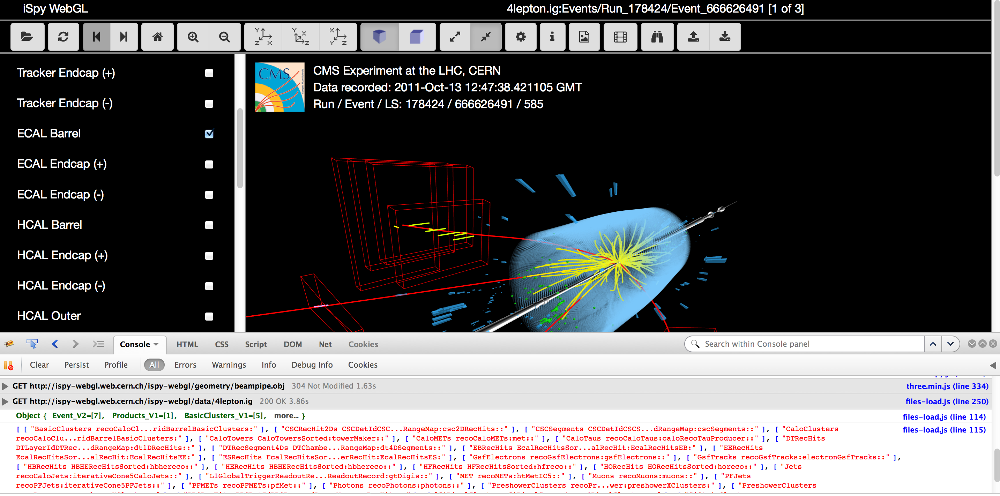
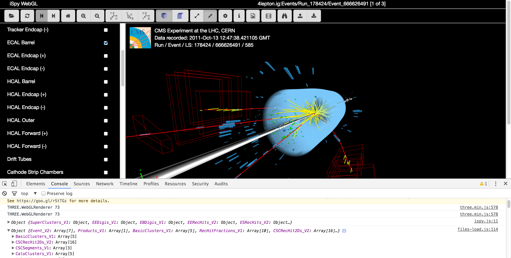
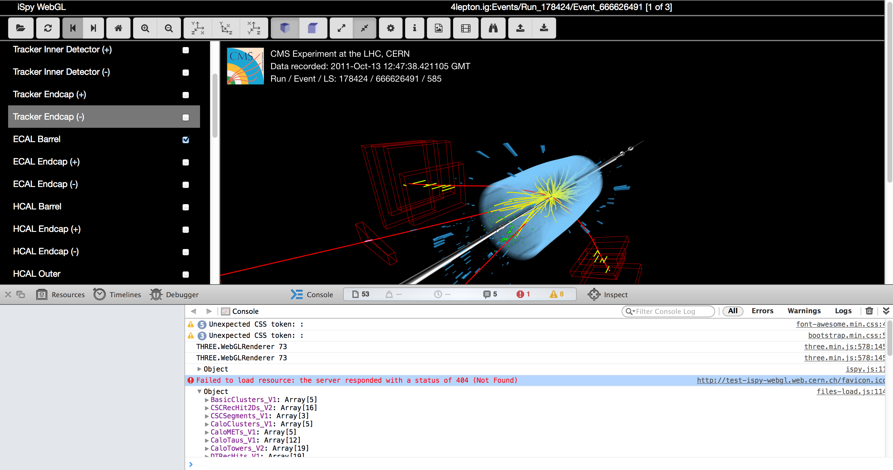
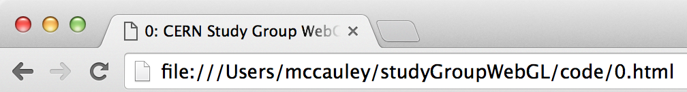
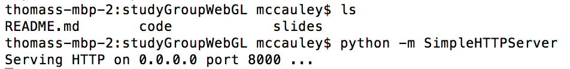

Introduction to WebGL
Using Three.js
Outline
- WebGL?
- Three.js
- HTML, CSS, JavaScript
- Let's develop a very simple application
- Further information
Slides and code examples:
WebGL
Is WebGL enabled?
Three.js
- A JavaScript API for WebGL
- Developed and maintained by Ricardo Cabello @mrdoob
- Large developer community
JavaScript
Firefox
Chrome
Safari
Let's start with a minimal page
<!DOCTYPE html>
<html>
<head>
<meta charset=utf-8>
<title>CERN Study Group: WebGL</title>
<style>
body { margin: 0; }
canvas { width: 100%; height: 100% }
</style>
</head>
<body>
<script src="js/three.min.js"></script>
<script>
<!-- We we will put our JavaScript here -->
</script>
</body>
</html>
If you have a local copy of the slides from GitHub, you can open code/0.html, hack away, and see the results in the browser (e.g.)
If you are running in Chrome you may have to run the page from localhost:8000/code/0.html instead (e.g.)
There are 3 essentials: scene, camera, renderer
Add a scene and a camera:
var w = window.innerWidth;
var h = window.innerHeight;
var scene = new THREE.Scene();
// Args: field-of-view, aspect ratio, near, far
var camera = new THREE.PerspectiveCamera(75, w/h, 0.1, 1000);
camera.position.z = 2;
Add a renderer and a render loop
var renderer = new THREE.WebGLRenderer({antialias:true});
renderer.setSize(w, h);
renderer.setPixelRatio(window.devicePixelRatio ? window.devicePixelRatio : 1);
document.body.appendChild(renderer.domElement);
var render = function () {
requestAnimationFrame(render);
renderer.render(scene, camera);
};
render();
The canvas is there. We just haven't added anything to the scene yet:

Add a cube to the scene:
var renderer = new THREE.WebGLRenderer({antialias:true});
renderer.setSize(w, h);
renderer.setPixelRatio(window.devicePixelRatio ? window.devicePixelRatio : 1);
document.body.appendChild(renderer.domElement);
var geometry = new THREE.BoxGeometry(1, 1, 1);
var material = new THREE.MeshBasicMaterial({color: 0x00ff00, wireframe:false});
var cube = new THREE.Mesh(geometry, material);
scene.add(cube);
var render = function () {
requestAnimationFrame(render);
renderer.render(scene, camera);
};
render();
Better. But it doesn't do much, does it?
Even knowing that it won't do anything, I still can't help not to clicking on the cube and trying to rotate it. However, that won't work (yet). We need to add controls that "listen" for what we do and then do something accordingly (like zoom or rotate).
Add some controls and change cube to wireframe:
<script src="js/TrackballControls.js"></script>
var controls = new THREE.TrackballControls(camera, renderer.domElement);
controls.rotateSpeed = 3.0;
controls.zoomSpeed = 0.5;
var geometry = new THREE.BoxGeometry(1, 1, 1);
var material = new THREE.MeshBasicMaterial({color: 0x00ff00, wireframe:true});
var cube = new THREE.Mesh(geometry, material);
scene.add(cube);
var render = function () {
requestAnimationFrame(render);
controls.update();
renderer.render(scene, camera);
};
Change from wireframe:
var material = new THREE.MeshBasicMaterial({color: 0x00ff00, wireframe:false});
Let's change the material to something "fancier":
var geometry = new THREE.BoxGeometry(1, 1, 1);
var material = new THREE.MeshPhongMaterial({color: 0x00ff00});
var cube = new THREE.Mesh(geometry, material);
scene.add(cube);
For some materials, we need a light. Let's add an ambient light to the scene:
var light = new THREE.AmbientLight(0xffffff);
scene.add(light);
Let's tone down the ambient light a bit, add a directional light, and change the initial position of the camera. I've also added in the example an axes indicator: XYZ
camera.position.x = 1.5;
camera.position.y = 1.5;
camera.position.z = 1.5;
var light = new THREE.AmbientLight(0x404040);
scene.add(light);
var directionalLight = new THREE.DirectionalLight(0xffffff, 0.5);
directionalLight.position.set( 0, 0.5, 1);
scene.add(directionalLight);
Add a texture to the material:
var material = new THREE.MeshPhongMaterial();
material.map = new THREE.ImageUtils.loadTexture("cms-color-medium.png");
Let's animate
var render = function () {
requestAnimationFrame( render );
controls.update();
cube.rotation.x += 0.01;
cube.rotation.y += 0.01;
renderer.render(scene, camera);
};
Let's add an event listener (listen for "click") and add some other images:
var textures = ["img/cms-color-medium.png",
"img/ATLAS-Logo-Ref-RGB-H_0.jpg",
"img/newlogo2.jpg",
"img/lhcb_logo.png",
"img/CERN-logo.jpg"];
var ti = 0;
material.map = new THREE.TextureLoader().load(textures[0]);
var cube = new THREE.Mesh( geometry, material );
scene.add( cube );
window.addEventListener('click', function(){
ti = ti === textures.length-1 ? 0 : ti+1;
material.map = new THREE.TextureLoader().load(textures[ti]);
});